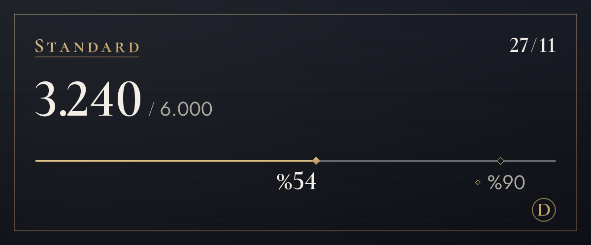

Planlar
Ücretsiz başla, daha fazlasına ihtiyacın olduğunda planını değiştir.
Şu an deneme aşamasındayız, bu yüzden henüz ödeme almıyoruz. Ödemeler açıldığında abone olma ve iptal işlemlerini bu sayfadan yapacaksın. Deneme aşamasında limiti aşsan da çeviri durmaz.
Free
$0
Önce bir dene (orijinali görüntülemek sayılmaz)
Ayda 100 çeviri (günde yaklaşık 3), ilk 14 gün 4 üslup, 3 sözlük kelimesi
Bu limitten ayrıca şunlar da düşer: görsellerdeki yazılar (görsel başına genelde 4) ve görsel üzerine çeviri (genelde 6)
Nasıl başlanırLite
$4,99/ay
Her sunucu için bir üslup seç: arkadaşlarla senli benli, yeni bir yerde sizli bizli
Ayda 1.200 çeviri (günde yaklaşık 40), 4 üslup, limit dolunca günde 20 çeviri daha, 10 sözlük kelimesi
Bu limitten ayrıca şunlar da düşer: görsellerdeki yazılar (görsel başına genelde 4) ve görsel üzerine çeviri (genelde 6)
Seç (Lite)Standard
Önerilen
$9,99/ay
Her gün sohbet etmeye fazlasıyla yeter
Ayda 6.000 çeviri (günde yaklaşık 200), 4 üslup, limit dolunca günde 20 çeviri daha, 30 sözlük kelimesi, ayda 20 açıklama
Bu limitten ayrıca şunlar da düşer: görsellerdeki yazılar (görsel başına genelde 4) ve görsel üzerine çeviri (genelde 6)
Seç (Standard)Plus
$14,99/ay
Çok kullananlar için en fazla çeviri
Ayda 20.000 çeviri (günde yaklaşık 667), 4 üslup, limit dolunca günde 20 çeviri daha, 100 sözlük kelimesi, ayda 60 açıklama
Bu limitten ayrıca şunlar da düşer: görsellerdeki yazılar (görsel başına genelde 4) ve görsel üzerine çeviri (genelde 6)
Seç (Plus)
- Fiyatlar ABD doları cinsindendir. Ülkene ait vergi ödeme ekranında eklenir.
- Ücretli planlar, otomatik olarak yenilenen aylık aboneliklerdir. İstediğin zaman iptal edebilirsin; iptal ettiğinde bir sonraki ödeme alınmaz.
- Free planı hiçbir zaman kendiliğinden ücretli plana dönüşmez.
- Kullandığın kısım için cayma hakkın sınırlıdır; önce Free planını deneyebilirsin.
- Çevirileri AI (Anthropic'in Claude modeli) yapar. Hata yapabilir, bu yüzden önemli konularda orijinali de kontrol et.
- Ayrıntılar Kullanım Koşulları ve İade Politikası sayfalarında.
Çeviriler nasıl sayılır
Plan limitleri çeviri sayısıyla ölçülür. Bir mesajın bir dile çevrilmesi 1 çeviridir.
- Metin
- Mesaj başına 1Uzun mesajlarda Korece, Çince veya Japonca için her 200 karakterde, diğer diller için her 500 karakterde 1 çeviri daha sayılır. Çevrilecek bir şey olmayan mesajlar sayılmaz.
- Sağ tık çevirisi
- Mesaj başına 1Metinle aynı. Orijinali veya başka bir dili görüntülemek sayılmaz.
- Görsellerdeki yazı
- Görsel başına genelde 4Bir görseli okumak 3, artı okunan metnin çevirisi. Yazı olmayan görseller sayılmaz ve mesaj başına en fazla 4 görsel okunur.
- Görsel üzerine çeviri
- Bir metin bloğu için 6Okuma 3, çeviri 1, görsele yazma 2. Her ek blok, çevirisi için en az 1 ekler ve her 16 blok bir görsel sayılır. 16 bloktan fazlasında önce maliyeti görürsün, onayladığında işlem yapılır (en fazla 128 blok). Yazı tipini değiştirmek sayılmaz.
- Sesli mesajlar Yakında
- Sesin saniyesi başına 1Telefon uygulamasından gönderilen sesli mesajları yazıya döküp çevirme özelliği hazırlanıyor. Açıldığında söylenenlerin çevirisi de eklenecek, konuşma içermeyen mesajlar sayılmayacak.
- Günlük üst sınır
- 200 görselKişi başına sayılır ve tüm planlarda aynıdır; böylece toplu otomatik kullanım diğer herkesin çevirilerini durduramaz.
- Kim öder
- Görsel simgelerinden veya sağ tıkla açılan çeviriler, mesajı paylaşan kişiden değil, düğmeye basan kişiden sayılır.
Örneğin
Günde 200 çeviriyle
Standard planının günlük karşılığı
Birkaç görsel çevirip yine de bütün akşam sohbet etmeye yeter.
Günde 40 çeviriyle
Lite planının günlük karşılığı
Arkadaşlarla bir saatlik sohbete yeter.

/çeviri kullanım komutuyla görürsün.Sıkça sorulan sorular
Ödemeler ne zaman açılacak?
Şu an deneme aşamasındayız; ödeme almıyoruz ve herkes Free planını kullanıyor. Ödemeler, işletme kaydı ve ödeme hizmeti sağlayıcısı hazır olduktan sonra açılacak; tarihi destek sunucusundaki haberlerde ve bu sayfada duyuracağız. Kore'de ödeme won ile, diğer tüm ülkelerde ABD doları ile yapılır.
Nasıl iptal ederim?
Ödemeler açıldığında, abone olduğun yerde, yani bu web sitesinin planlar sayfasından iptal edersin. İptal etmek bir sonraki ödemeyi durdurur ve ödediğin dönemin sonuna kadar planını kullanmaya devam edersin. Botun ayarlar panelindeki plan yönetimi ekranı da seni buraya getirir.
İadeler nasıl işler?
İlk ödemenin tamamını 7 gün içinde iade alabilirsin. Hizmet kesintilerinde veya hizmet bu sayfada anlatılandan farklı olduğunda da iade yaparız. Geri kalan koşullar İade Politikası sayfasında.
Görseller saklanıyor mu?
Bot bunları saklamaz. Görseller yazıyı okumak için Anthropic şirketine gönderilir ve sana yalnızca sonuç gösterilir. Düğmeye basmadan hiçbir şey gönderilmez. Okunan metin de saklanmaz; yalnızca çeviri, çeviri önbelleği kuralına (30 gün) tabidir. Yazı tipi değişikliği hemen yeniden çizilebilsin diye “Görsele yaz” düğmesine bastığın görsel, okunan metin ve çevirisiyle birlikte 15 dakika bellekte tutulur.
Çevirileri kim yapıyor?
Çevirileri AI (Anthropic'in Claude modeli) yapar. Görsellerdeki yazıları da aynı AI okur. Çeviriler hatalı olabilir, bu yüzden önemli konularda orijinali de kontrol et. Üzerine çeviri yazılmış görsellerin açıklamasında (alternatif metin) ve sonucun altındaki notta AI çevirisi olduğu belirtilir.